9 Introduction to Git(Hub)
For this chapter’s exercises, if not already performed, you will need to create the conda environment from the yml file in the following link (right click and save as to download), and once created, activate the environment with:
conda activate git-github9.1 Introduction
In this walkthrough, we will introduce the version control system Git as well as Github, a remote hosting service for version controlled repositories. Git and Github are increasingly popular tools for tracking data, collaborating on research projects, and sharing data and code, and learning to use them will help in many aspects of your own research. For more information on the benefits of using version control systems, see the slides.
9.2 Background
What is a version control system? This is a general term for tools that allow you to track changes to objects - in this case files - over time. When it comes to bioinformatics, this is typically files such as scripts or notebooks, or simple text files such as CSV and FASTAs (although it can also apply to much larger binary files!). The use of a good version control system allows the restoration of old versions, modification to previous changes, tracking contributions by multiple people etc. By far the most popular version control system in bioinformatics is git - which was in fact also originally co-written by the creator of the Linux operating system!
Nowadays it is popular to include a remote hosting service for your version-controlled repositories. In bioinformatics, the most popular remote hosting service for Git version controlled code repositories is GitHub. While other open-source alternatives exist (e.g. GitLab or BitBucket), the most popular in bioinformatics is GitHub. It provides a user-friendly GUI and a range of other useful tools and functionality, in addition to most bioinformatic code and tools are hosted there.
So why should you use a version control system, such as GitHub?
- To have a (deep) backup of your work
- Allow you to revert to old versions/modify previous changes to files
- Allow multiple contributors to work simultaneously
- Allow you to test new scripts or code before updating a public version in a ‘sandbox’ area of the repository
- Help share your data, code, and results with the world!
9.3 Basic workflow
The basic concepts of using git and GitHub are as shown in (Figure 9.1)
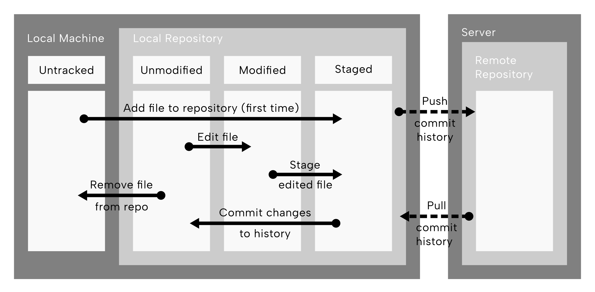
In the diagram of Figure 9.1, the two dark gray boxes represent a local machine (e.g. a laptop) and a remote server. Within the local machine, an ‘untracked’ box represent files not indexed by the local git repository. The arrow pointing into a light grey box (the local repository) in which three white boxes are present. These represent different ‘stages’ of an object of the repository. This first arrow from the ‘untracked’ box then spans to the furthest box called ‘staged’, which is the operation when you add a file to be indexed by the repository (this only happens once). Once staged, the arrow pointing from the ‘staged’ box back to the first box or ‘status’ within the local repository, called ‘unmodified’. This arrow, converting a staged file to unmodified, represents making a ‘commit’ (i.e. recording to git history a repository change). You can imagine committing to be equivalent to a permanent(!) save. The next arrow represents an edit to a file, which spans the ‘unmodified’ box to the middle ‘modified’’ status. Once all edits have been made, the edited file is ‘staged’ - the arrow that goes from the middle of the ‘modified’ state to the ‘staged’ state - after which a commit again would be made to record that file as ‘unmodified’ compared to the change history. The arrow pointing from the local repository back to the furthest left ‘untracked’ state of the local repository represents the removal of the file from indexing/tracking in the git history. Finally the two arrows that span between the local machine and remote server - one going from the local repository to the a remote repository (on the server) - represent ‘pushing’ the commit history to the server, and in the reverse direction - ‘pulling’ the commit history back to the local repository. These can be imagined as backing-up your git history to a cloud server, and the retrieving the backup (albeit with changes from others)
9.4 Preparation
We will now practise some of the git operations described above.
However, before we do this, we need to set up your GitHub account so that you can communicate via the command line.
GitHub does not allow pushing and pulling with normal passwords, but rather with a concept called ‘ssh keys’. These are special cryptographic strings of characters and numbers. When generating a pair, you get both a ‘private’ and ‘public’ key. The former you keep privately, whereas the other you upload to other servers/people. When you want to ‘prove’ that it’s you sending changes to the repository, you securely send your private key and this gets compared with your public key on the remote server. If after some cryptographic maths magic they match, the server will trust you and will accept your changes.
9.5 Using ssh keys for passwordless interaction with GitHub
So, to begin, you will set up an SSH key to facilitate easier authentication when transferring data between local and remote repositories. In other words, follow this section of the tutorial so that you never have to type in your github password again!
9.5.1 Creating SSH keys
First, generate you can generate your own ssh key pair, replacing the email below with your own address.
ssh-keygen -t ed25519 -C "<YOUR_EMAIL>@<EXAMPLE>.com"The -t flag tells the command which cryptographic algorithm to use.
When you type this command, you will be asked a range of questions:
- Enter file which to save key: here we suggest keep as default
- Enter passphrase: don’t specify one here (unless you want to be ultra secure), just press enter
- Enter same passphrase again: same as 2 (i.e., recommended - just press enter without any password)
You should now (hopefully!) have generated an ssh key. This is normally indicated by a ‘randomart image’ being pasted to console.
A random art image normally looks like something like:
+--[ RSA 2048]----+
| o=. |
| o o++E |
| + . Ooo. |
| + O B.. |
| = *S. |
| o |
| |
| |
| |
+-----------------+To check that it worked, we can change into the default directory where keys are stored. By default on UNIX operating system this is in your your home directory under a folder called .ssh. Lets change into that directory, and check the contents.
cd ~/.ssh/
ls id*You should see two files: id_ed25519, and id_ed25519.pub.
The first is your private key. This you should not share this any one, and should always stay on your local machine.
The second file (ending in .pub), is your public key. This you can give to others, on remote servers, or websites, to allow those places to know it is you.
So lets try this out on GitHub!
9.5.2 Logging the keys
First, we need to tell your computer that the keys exist and should be used for validation to remote locations. The tool that does that is called ssh-agent. We can check if it is running with the following command.
eval "$(ssh-agent -s)"If it’s running, you should get a text such as Agent pid <NUMBERS>.
If it’s not running, see the GitHub documentation for more information.
An operating system assigns each running program a unique number ID. If a program isn’t running, it won’t have a process ID!
When the agent is running, you need to give the path to the private key file as follows.
ssh-add ~/.ssh/id_ed255199.5.3 Registering keys on GitHub
Next, GitHub needs to have your public key on record so it can compare between the public and private keys. Open your webbrowser and navigate to your github account settings (typically: press your profile picture in the top bar menu, then settings).
Then, under settings, in the side bar go to SSH & GPG Keys (Figure 9.2), then press New SSH Key (Figure 9.3).
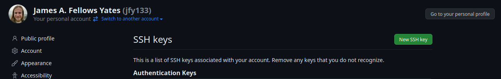
When in the ‘new SHH key’ page, you can give key a title (e.g. the local machine the key was generated on). Leave the ‘Key type’ as ‘Autentication Key’ Then paste the entire contents of public key into the main text box that you just generated on your local machine.
cat ~/.ssh/id_ed25519.pubIt’s very important to paste the whole string! This starts with ssh-ed (or whatever algorithm used) and ending in your email address.
Finally, press the Add SSH key. To check that it worked, run the following command on your local machine.
ssh -T git@github.comYou should see a message along the lines of:
Hi <YOUR_USERNAME>! you that you've successfully authenticated.If you get a message saying something such as
The authenticity of host 'github.com (140.82.121.3)' can't be established.Type yes on your keyboard and press enter.
For more information about setting up the SSH key, including instructions for different operating systems, check out github’s documentation.
9.6 Creating a GitHub repository
Now that you have set up your own SSH key, we can begin working on some version controlled data!
Navigate to your GitHub homepage (https://github.com) and create a new repository. You can normally do this by pressing the green ‘New’ repository button, or the ➕ icon on the homepage (typically in sidebars or top bars).
For this tutorial, on the new repository page (Figure 9.4): - choose any name for your new repo (including the auto-generated ‘inspired ones’). - Leave the description as empty - Select that the repository is ‘public’ (the default) - Tick the ’Add a README file; checkbox - Leave as default the .gitignore and license sections
Then press the green ‘Create repository’ button.

For the remainder of the session, replace the name of my repository (vigilant-octo-journey) with your own repo name.
Change into the directory where you would like to work, and let’s get started!
9.7 The only 6 commands you only need to really know
We have set all our authentication keys for GitHub, and created a new repository. We can now run through the some of the concepts we learnt in the Basic Workflow section.
This can be boiled down to just six that you really need to work with for Git(Hub) for basic version control of all your software, scripts, and (small) data!
To start, create and change into the chapter’s data directory with
mkdir /<path>/<to>/git-github9.7.1 git clone
First, we will learn to clone a remote repository onto your local machine.
This is actually not in our basic workflow diagram in Figure 9.1, however you only need to do it once, and is only needed when you work with a remote server. With clone we are making a copy of the remote repository, and linking it so you can transmit data between the copy on the ‘local’ machine with the ‘remote’ repository on the server.
To make the ‘copy’, navigate to your new repo, select the green code dropdown button (Figure 9.5), select SSH, and copy the address as shown below.

Back at your command line, clone the repo as follows:
git clone git@github.com:<YOUR_USERNAME>/<YOUR_REPO_NAME>.gitIt’s important that you do select the ssh tab, otherwise you will not be able to push and pull with your ssh keys! If you get asked for a password, you’ve not used ssh! Press ctrl + c, to cancel, and try the command again but with the correct ssh address.
Once cloned, you can run ls to see there is now a directory with the same name as repository
lsand if you change into it and run ls again, you should see the README.md file we specified to be generated on GitHub.
cd <NAME_OF_REPO>
ls9.7.2 git add
Next, let’s add a new and modified file to our ‘staging area’ on our local machine.
This corresponds either to the red arrow or blue arrows in (Figure 9.6).
We can do this in two ways
- Stage a previously untracked file
- Stage a tracked, but now modified file
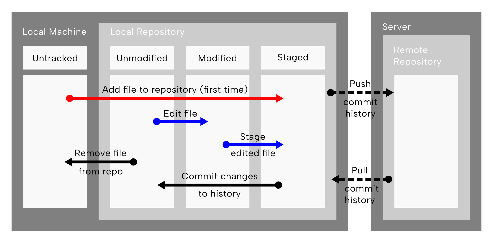
git add operations highlighted . The arrows indicating the two ‘staging’ operations, carried out by the git add command, are coloured red for a staging a ‘previously untracked’, and blue for the editing of an already tracked file and staging of the edited file. Reconstructed and modified after Chacon and Straub (2014).First we will make a new file called file_A.txt, and also add some extra text to the end of the README.md file (i.e., just modify).
Once you’ve made those both, lets first only stage the new file.
echo "test_file" > file_A.txt
echo "Just an example repo" >> README.md
git add file_A.txt9.7.3 git status
So hopefully we’ve staged at least one file, but how do you know exactly what the status is of the modified and unmodified files in the repository?
At any point you can use the command git status to give a summary of any files present in the repository directory that changed status since the last commit (i.e., the last preserved entry in the git history).
git statusOn branch main
Your branch is up to date with 'origin/main'.
Changes to be committed:
(use "git restore --staged <file>..." to unstage)
new file: file_A.txt
Changes not staged for commit:
(use "git add <file>..." to update what will be committed)
(use "git restore <file>..." to discard changes in working directory)
modified: README.mdYou should see that file_A.txt is staged and ‘ready to be committed’ but README.md is NOT staged - thus the changes would not be preserved to the git history. Comparing to our diagram in Figure 9.6, we have performed the ‘red’ arrow, but for the blue arrow, we’ve only carried out the ‘Edit file’ arrow, the second ‘Stage edited file’ is not yet carried out.
Stage the modified README.md file and check the status again.
git add README.md
git statusOn branch main
Your branch is up to date with 'origin/main'.
Changes to be committed:
(use "git restore --staged <file>..." to unstage)
modified: README.md
new file: file_A.txtYou should now see both README.md and file_A.txt coloured green, and in the ‘changes to be committed’ section. You can also see the README is ‘modified’ whereas file_A.txt is a new file, so will be newly indexed with git (i.e., will be the first entry in the git history for that file).
9.7.4 git commit
Now we need to package or save the changes into a commit with a message describing the changes we’ve just made. Each commit (i.e., entry in the git history) comes with a unique hash ID and will be stored forever in git history. Committing corresponds to the read arrow taking all staged modified or newly added files from the ‘Staged’ to ‘Unmodified state’ in (Figure 9.7).
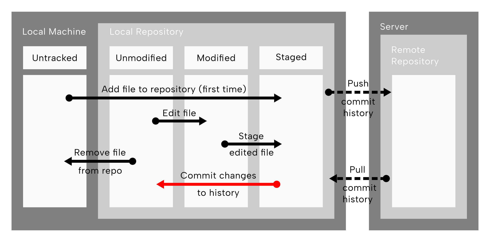
git commit operations highlighted. The red arrow shows committing the changes to history, i.e., taking a tracked file in the staging error, writing the modifications in the file to the git history and placing the file back into the ‘unmodified’ status column. Reconstructed and modified after Chacon and Straub (2014).git commit -m "Add new file and modify README"The first time you commit, you may get a message about something like this.
Your name and email address were configured automatically based
on your username and hostname. <...>For the purposes of this tutorial this is fine, but it is highly recommended to follow the instructions in the message to correctly associate your commits to your own GitHub account.
The -m part of the command corresponds to the human-readable description of the change.
What happens if you run git status again?
On branch main
Your branch is ahead of 'origin/main' by 1 commit.
(use "git push" to publish your local commits)
nothing to commit, working tree cleanYou can see while there are no modified or staged files listed any more, our ‘branch’ is now ahead by 1 commit. This means that our local copy has an extra entry in the git history, compared to the remote server (‘origin’) copy of the repository.
9.7.5 git push
How then do we ‘backup’ our local changes and the git history back up to the server?
We do that with, you guessed it, the git push command! This is the red dashed arrow in (Figure 9.8).
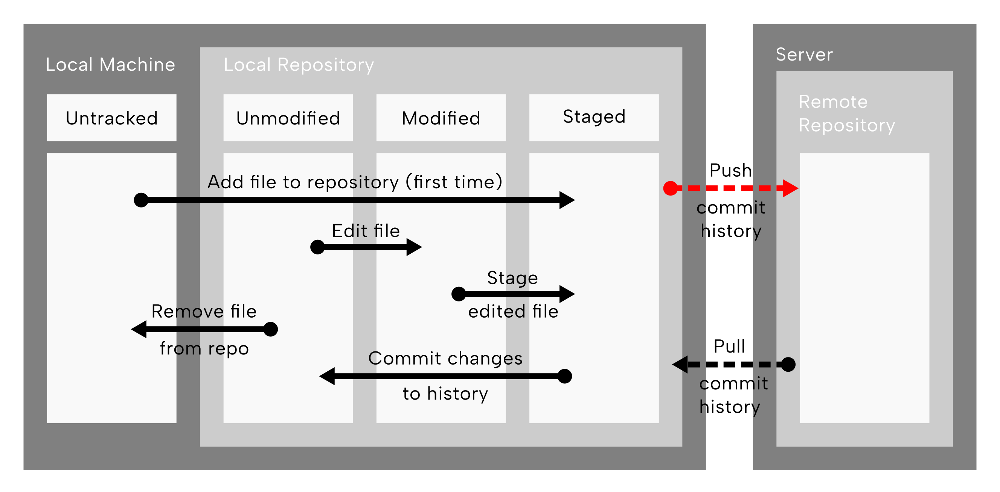
git push operations highlighted. The red dashed arrow between the local repository box of the local machine, to the remote repository on the server. This represents ‘pushing’ or sending the changes made on the local machine back up to remote repository, so both the local and remote repository have the same records of changes to the files. Reconstructed and modified after Chacon and Straub (2014).You can run this as follows.
git pushEnumerating objects: 6, done.
Counting objects: 100% (6/6), done.
Delta compression using up to 14 threads
Compressing objects: 100% (2/2), done.
Writing objects: 100% (4/4), 367 bytes | 367.00 KiB/s, done.
Total 4 (delta 0), reused 0 (delta 0), pack-reused 0
To github.com:<USERNAME>/<REPOSITORY_NAME>.git
536183b..2d252b5 main -> mainWhen you do this, you will get a bunch of lines including a set of progress information. Once you get a couple of hash strings, all your changes have been copied to the remote!
We mentioned earlier that as well as your human-readable commit ‘message’, you will also get a unique hash string for each commit. Where on the output are the commit hashes? What do you think the two hashes represent?
The hash line is:
536183b..2d252b5 main -> mainThe two hashes represent the previous (536183b) entry in the git history, and the new one (2d252b5) of the one you just made when you ran git commit.
Tip: try typing git log!
The main bit of the string represents the branch you pushed to. We will learn more about this later in this chapter.
If you go to your GitHub repository on the website, and refresh the page, you should see the changes - both the file in the file browser at the top, and the new test you added to the README.md file!
9.7.6 git pull
But what if we worked on a different local machine, and pushed changes from there? How do we the download new commits from our remote to our local repository?
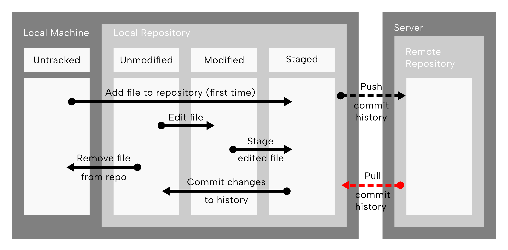
git pull operations highlighted. The red dashed arrow going from the remote repository on the server back to the local repository represents copying changes pushed from elsewhere back to your local copy of the repository. Reconstructed and modified after Chacon and Straub (2014).We carry this out with the counterpart of push, pull (Figure 9.9)! Try running the command now!
git pullWhat output do you get from running git pull? Why does it say what it says?
You should get a message of Already up to date. This is because we have made no further changes to the remote version of the repository since we pushed!
So how can we make changes to the remote repository? One way would be to make a local clone elsewhere on a difference machine (or in a different folder on the same machine!), make some changes and commits there, and then push from there, and pull to our current local repository…
But that sounds rather convoluted, no 😉?
Instead, another benefit of GitHub is you can actually make changes to your repository from your web browser! In your web browser, in the file browser click on the README.md. If you’re still logged into your GitHub account, you should see a small pencil icon in the top right of the file viewer (Figure 9.10).
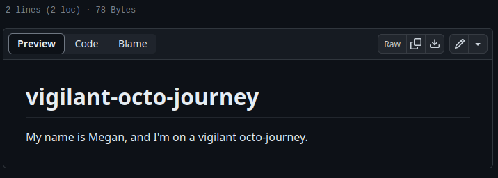
After pressing the pencil icon, add some more contents to the README.md file, then press the green ‘Commit changes’ button in the top right, write a commit message (sounds familiar?), and press the next ‘green ’Commit changes’ button (you can ignore the extended description).
On the resulting file browser, you should see your changes, and your commit message above the file browser with the commit hash!
Moving back to your terminal, try running git pull again. This time you should get a bunch of progress bars and statistics again
What do you think the number next to the pulled file name means? What do the two colours represent?
The number represents the number of lines with changes on them. The green plus and red minus symbol represents number lines with ‘additions’ modifications, and deletion modifications accordingly!
A description of the changes is seen in the last line of the git pull output.
9.7.7 Summary
And that’s the basic 6 commands you need to know to work with Git and GitHub for your own work - repeat ad nauseum!
Git is supremely powerful, but can get extremely complicated because of this. If you stick with these 6 commands to begin, as you slowly get more comfortable with the routine, we recommend to start step-by-step broadening your git knowledge as you come across other questions and problems with git. There is no one comprehensive course or documentation, so we recommend just keep practising!
9.8 Working in sandboxes and collaboratively
Once you’re comfortable with working Git for your own projects, it’s time to learn a few more things to help you work both more safely, efficiently, and also eventually collaboratively!
Git facilitates ‘sandboxes’ potential changes and also simultaneous work by small teams through branching and pull requests.
Branching generates an independent copy of the ‘mainline’ repository contents. When working on this branch, you can make as many changes and edits as you wish without breaking or modifying the ‘master’ version.
Once you’re happy with the changes you’ve made in your branch acting as the ‘sandbox’, you can then incorporate these changes into your ‘mainline’ repository using a pull request and a merge.
You can make a branch from any point in your git history, and also make as many branches as you want!
9.8.1 Branches
There are two ways you can make a branch. The first way is using the GitHub interface, as in Figure 9.11.

The instructions in Figure 9.11 would result in the branch existing on the remote copy of your repository i.e., on GitHub. To get this branch on your local copy, you can simply run git pull in your terminal!
You can also create branches via command line.
From your terminal, you can create a new branch as follows.
git switch -c test-branchSwitched to a new branch 'test-branch'The -c flag indicates to create the new branch with the name you provide, in the example above this is test-branch.
Earlier versions of git used a command called git checkout. You will see this command on many older tutorials. However git switch was created as a simpler and more intuitive command. git checkout is much more powerful command, but with great power comes great responsibility (and the risk to break things…)
To switch back to the original main branch you were on, run the same command but without the -c flag and with the name of the branch you switch to.
git switch mainNote that if you start making changes on one branch you must commit changes for them to be saved to the desired branch, before you switch to a new branch!
Uncommitted changes will ‘follow’ you to which ever branch you are on until make a commit.
What command could you run to see which branches already exist in the local repository we are on? This command has not been introduced in this tutorial! Try running git --help or Google it to find the answer!
git branch main
* test-branchWhere the green colour and the star indicates the branch you are currently on.
9.8.2 Pull requests
A Pull request (a.k.a. PR) is the GitHub term for proposing changes to a branch from another branch.
Others can comment and make suggestions before your changes are merged into the main branch.
A pull request is the safest way to check your changes before you merge them in, ensure you don’t make any mistakes breaking something else in your ‘receiving’ branch.
Git(Hub) will tell and warn you if you are proposing changes on a line where since you branched, someone else has modified that line in the ‘receiving’ branch.
This is called a merge conflict, and is up to you to decide which is the correct change to retain.
To make a pull request, you first make sure you have a branch with some changes on it.
On your local repository, in your terminal, switch back to your test-branch, and add another new line to the end of README.md, stage the file, commit, and push. (If you get stuck, or unsure, feel free to check the Answer).
git switch test-branchSwitched to branch 'test-branch'echo 'We love SPAAM!' >> README.md
git statusSwitched to branch 'test-branch'git add README.md
git commit -m 'Update README'[test-branch 99c4266] Update README
1 file changed, 1 insertion(+)git pushfatal: The current branch test-branch has no upstream branch.
To push the current branch and set the remote as upstream, use
git push --set-upstream origin test-branchIn this case, our remote copy of the reposity does not have the branch. Therefore the first time we push, we tell Git to tell GitHub to create the branch on the remote as well by using the command it suggests.
git push --set-upstream origin test-branchEnumerating objects: 5, done.
Counting objects: 100% (5/5), done.
Delta compression using up to 14 threads
Compressing objects: 100% (3/3), done.
Writing objects: 100% (3/3), 352 bytes | 352.00 KiB/s, done.
Total 3 (delta 0), reused 0 (delta 0), pack-reused 0
remote:
remote: Create a pull request for 'test-branch' on GitHub by visiting:
remote: https://github.com/<USERNAME>/<REPOSITORY_NAME>/pull/new/test-branch
remote:
To github.com:<USERNAME>/<REPOSITORY_NAME>.git
* [new branch] test-branch -> test-branch
Branch 'test-branch' set up to track remote branch 'test-branch' from 'originOnce you’ve pushed your changes to you test-branch branch, go to the GitHub interface for your repository.
Open the ‘Pull requests tab’ and press the green ‘New pull request’ button, or press the green ‘Compare & pull request’ button in the yellow box that may appear if you recently pushed (Figure 9.12).
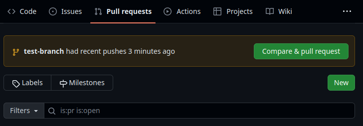
Once opened, you can add a title and a description of the pull request (Figure 9.13).
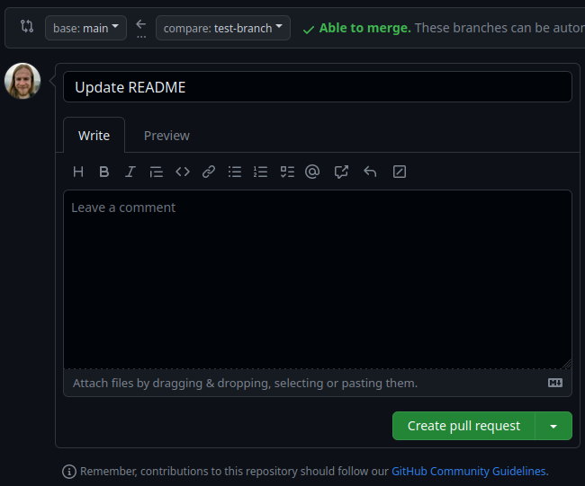
Once you press the Create pull request button, it’ll open the unique Pull request of this branch, in which others can leave comments and suggestions (Figure 9.14). By pressing the ‘Files changed’ tab, you can see exactly what has changed (Figure 9.15).
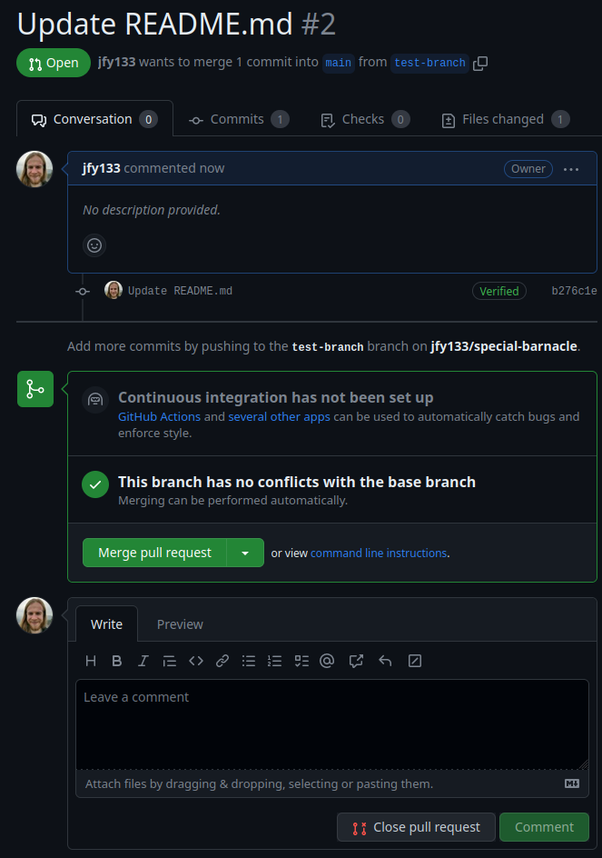
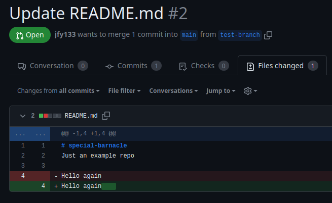
Once we and our collaborators are happy with the changes (a code or pull request ‘review’), we can go back to the ‘Conversation’ tab of the unique pull request, and press the green ‘Merge pull request’ button, and confirm the merge.
When back on the main branch of your repository, you should see your updated README.md in all it’s glory!
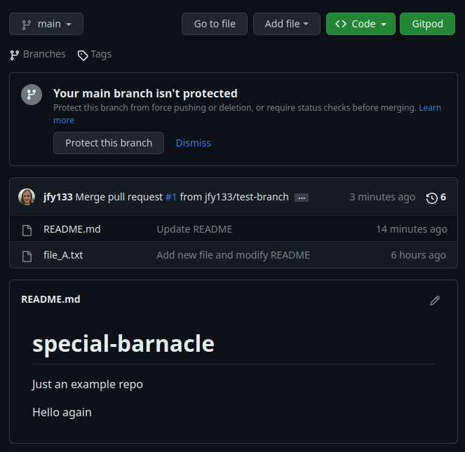
main branch after a pull request merge, with the text changes that were originally written on the test-branch displayed in the README.md file.For more information on creating a pull request, see GitHub’s documentation.
What command would you use to merge one branch into another on a local copy of your repository. Tip: you are working with yourself when you work on your local repository, thus you don’t need to ‘request’ a pull!
git switch mainSwitched to branch 'main'
Your branch is up to date with 'origin/main'.git merge test-branchUpdating 0ad9bb3..99c4266
Fast-forward
README.md | 1 +
1 file changed, 1 insertion(+)9.9 Summary
In this chapter, we have gone over the fundamental concepts of Git.
We’ve gone through setting up your GitHub account to allow passwordless interaction between the GitHub remote repository and your local copy on your machine with SSH keys.
Through the GitHub website interface we made a new repository and gone through the 6 basic commands you need for using Git
- git clone
- git add
- git status
- git commit
- git push
- git pull
We finally covered how to work in sandboxes and collaboratively with branches and pull requests.
9.10 Questions to think about
- Why is using a version control software for tracking data and code important?
- How can using Git(Hub) help me to collaborate on group projects?